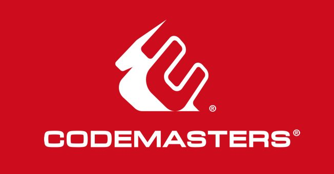

En CodeMasterPeru creamos experiencias digitales únicas. Combinamos diseño moderno, código limpio y tecnología avanzada para desarrollar sitios web funcionales, atractivos y totalmente responsivos. Nuestro objetivo es transformar ideas en proyectos web innovadores que conecten con las personas y potencien tu presencia online.
Bienvenidos a CodeMasterPeru
Diseñamos y desarrollamos sitios modernos con HTML, CSS, Flex y Grid
